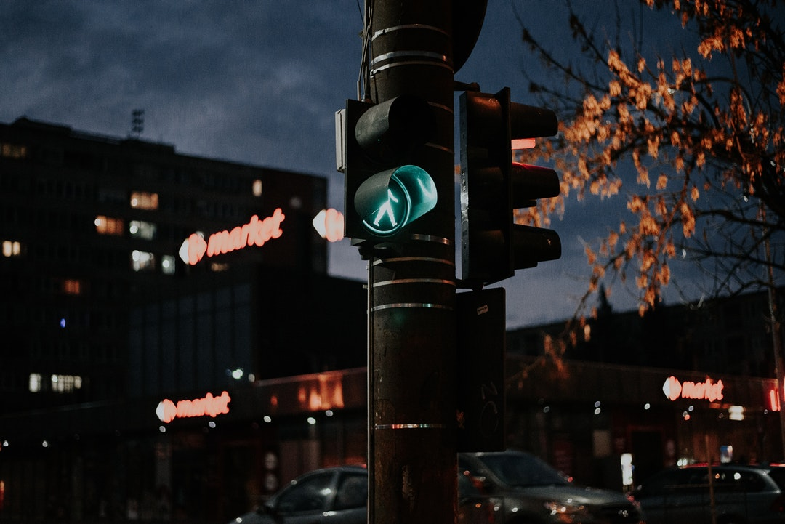

<!-- 이미지 -->
<div style="width:100%; padding-top:50px;">
  
</div>
<!-- description -->
<span class="f-ng" style="width:100%; left:50%; transform:translate(-50%, 0%); font-size:14px; line-height:30px; text-align:center; padding-top:30px;">
  떼구룰루의 세계에 오신 것을 환영합니다. <br>
  떼구룰루는 다양하고 실험적인 디자인 작업물들을 저장 및 공유하는 개인 사이트입니다. <br><br>
  떼구룰루란 생각을 할 때 머리를 굴린다는 표현에서 착안하여 구르는 소리, 모양을 표현하는 단어인 <b class="f-ngb" style="font-size:17px; color:#8365B5;">떼구루루</b>와 신나거나 즐거울 때 내는 의성어인 <b class="f-ngb" style="font-size:17px; color:#8365B5;">룰루랄라</b>의 합성어로 <br>
  재미있고 신나는 생각을 해보자는 의미를 담은 이름입니다.
</span>
<!-- contact -->
<div style="width:100%; padding-top:50px;">
  <span class="f-ngb" style="left:50%; transform:translate(-50%, 0%); font-size:25px; text-align:center; color:#000000; opacity:0.2; border-radius:5px; background:#C7DDFF; padding-left:10px; padding-right:10px;">
    contact
  </span>
</div>
<div style="left:50%; transform:translate(-50%, 0%); padding-top:20px; padding-bottom:50px;">
  <div style="width:20px; height:16px;">
    <i class="icon-email iconClass" style="font-size:30px;"></i>
  </div>
  <span class="f-ng" style="font-size:14px; text-align:center; padding-left:7px;">
    y2k-112@daum.net
  </span>
</div>
